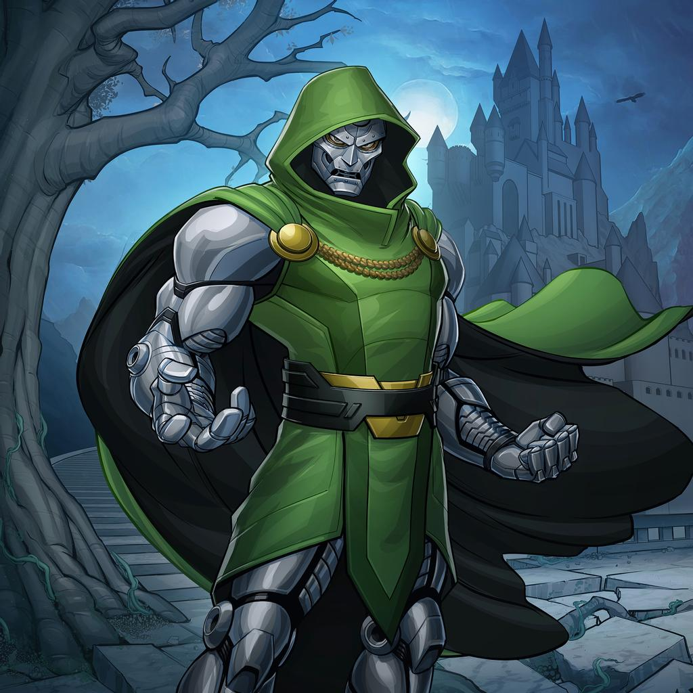

Stan Lee was raised in New York City by his Romanian parents during the Great Depression in the 1920s. During this time, Lee's family struggled to make ends meets. By the 1940s, Lee was able to land a job at Timely Comics where he was an office assistant and eventually worked his way up to interim editor. However, this was cut short when he enlisted into the army from 1942 to 1945 in WWII. After the war ended, Lee dedicated most of his time towards making comics with the assistance of the artist Jack Kirby. When developing iconic characters we know today, Lee imbused his characters with human-like attributes while having them tack real-world issues.
Stan Lee's favorite superhero was the iconic Spiderman. According to him, Spiderman is a character that can mostly relate to his life. Lee stated that "...He's the one who's most like me - nothing ever turns out 100 percent OK". When Lee was creating this superhero, Lee claimed that he when he saw a fly crawling up a wall he started wondering if a person could do that. Next thing you know, a legend was born!!
Dr.Doom is Lee's favorite Marvel villian. Despite the fact that everybody views Doom as a villian, Stan Lee does not. He believes that many people misunderstand Doom's motives as wanting to rule the world. This idea of ruling the world is not a serious crime, and that many people believe that Doom wants to destroy everything. However, all he wants to do is be the ruler world.
Throughout the Stan Lee's career, he has been known as a revered comic book creator. He has co-created characters like as Spiderman, Iron Man, Fantastic Four, and the X-Men. On top of this, he has worked at Marvel Comics since he was 17 years old while increasing his net worth over $200 million. Despite all of these accomplishments, Lee also has a foundation, The Stan Lee Foundation, that aims on providing literacy, education, and arts throughout the United States. Lee has also recieved a star on the Hollywood Walk of Fame and has been inducted into Will Eisner Award Hall of Fame.
By humanizing the marvel heroes, Stan Lee was able target real-world issues that many face everyday. His characters were able to bring out the best in each individual regardless where they are from. Lee focused heavily on philosophical topics in writings that made the reader think twice on he was saying. This type of writing was not seen as often especially in comic books. Consequently, it made a lot readers interested in what he had to say. Not only that, but he was also able to have his heroes fight against the corrupt and help the weak. This simple attributes in his characters attracted many readers, since it was near the end of WWII.